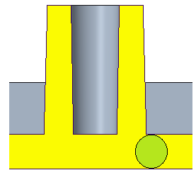
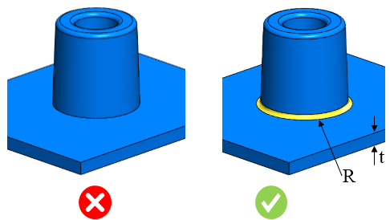

ボスの根元部における最小半径は、ユーザーが指定した値以上である必要があります。
ボスは、取り付けや組み立てのためのポイントとして多くの部品設計で使用されます。最も一般的な形状は、ねじ、ねじインサート、またはその他の締結用ハードウェアを受けるための穴を持つ円筒状の突起です。使用条件下では、ボスは他の部位では見られない荷重を受けることがよくあります。応力を低減するために、ボスの根元部には所定の最小半径値を持つフィレットを設ける必要があります。また、肉厚部の発生を防ぐため、ボス根元部の半径は特定の最大値を超えてはなりません。
局所肉厚の算出

一般的な指針として、ボス根元部の推奨される最小半径は、公称の局所肉厚の 0.25 倍以上とする必要があります。
DFMPro はボス根元部のフィレット半径を識別し、その半径と公称肉厚との比率を算出します。この比率は、設定された値と比較して検証されます。
ユーザーは、デフォルトで設定されている比率を編集することができます。
ルール UI では、材料の一覧が Map Material から読み込まれ、ユーザーは材料およびその値を設定することができます。
材料とその値を設定した後、Ctrl+M コマンドを使用して、ルール UI 内で材料グループおよびグレード付きの設定済み材料リストをフィルタ表示できます。同じキー（Ctrl+M）を使用して、フィルタを解除することもできます。

ここで、
R = ボスの根元半径
t = 公称肉厚